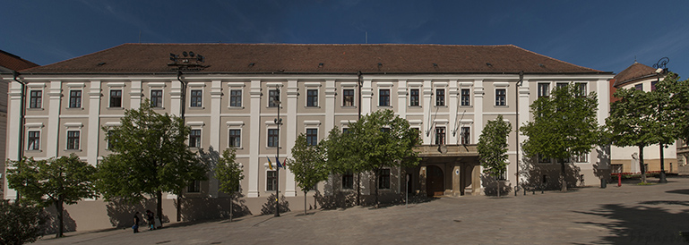

Gimnázium A pécsi Ciszterci Rend Nagy Lajos Gimnáziuma és Kollégiuma,mely Pécs belvárosában található, sok jeles magyar költőt és tudóst neveltetett,amely nem is meglepő,hiszen az intézményben emelt szinten oktatják a magyart,matematikát,informatikát,fizikát,kémiát és biológiát.  Az intézményt sok hírportál Magyarország 100 legjobb vidéki gimnáziuma között listázta az elmúlt 10 évben.Középiskolai tanulmányaimat ezen iskola padjaiban töltöttem, egészen az érettségiig,emelt matek és informatika fakultáción tanultam.(A gimnáziumi éveim alatt sikerült angolból és németből is sikeres nyelvizsgát tennem.)
Egyetem
A Budapesti Műszaki és Gazdaságtudományi Egyetem (rövidítve: BME vagy Műegyetem) Közép-Európa és Magyarország egyik legnagyobb presztízzsel rendelkező műszaki egyeteme,
 1782-es alapításával a világ első műszaki egyeteme (pontosabban az első olyan intézmény, amely egyetemi keretek között, egyetemi struktúrában folytatott mérnökképzést). Nyolc karával és több mint 24.000 hallgatójával Magyarország egyik legnagyobb egyeteme. Egyetemi tanulmányaimat 2020-ban kezdtem a gépészmérnöki karon, gépészmérnök hallgatóként.Jelenleg másod éves vagyok.
1782-es alapításával a világ első műszaki egyeteme (pontosabban az első olyan intézmény, amely egyetemi keretek között, egyetemi struktúrában folytatott mérnökképzést). Nyolc karával és több mint 24.000 hallgatójával Magyarország egyik legnagyobb egyeteme. Egyetemi tanulmányaimat 2020-ban kezdtem a gépészmérnöki karon, gépészmérnök hallgatóként.Jelenleg másod éves vagyok.